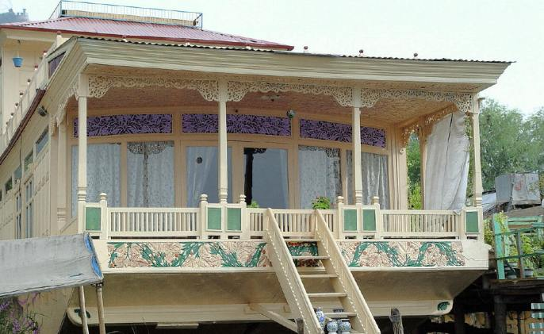
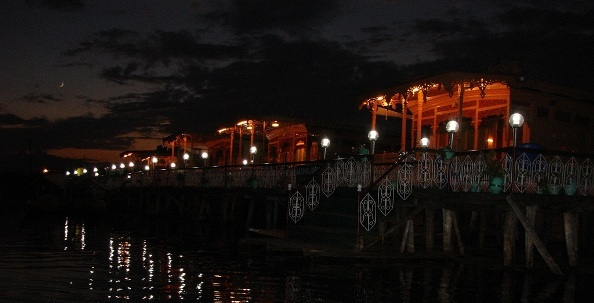
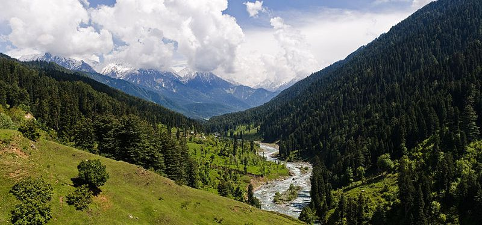
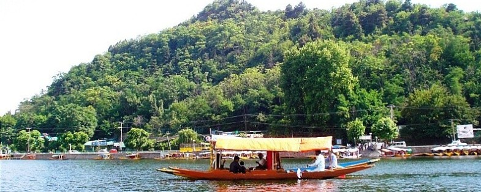
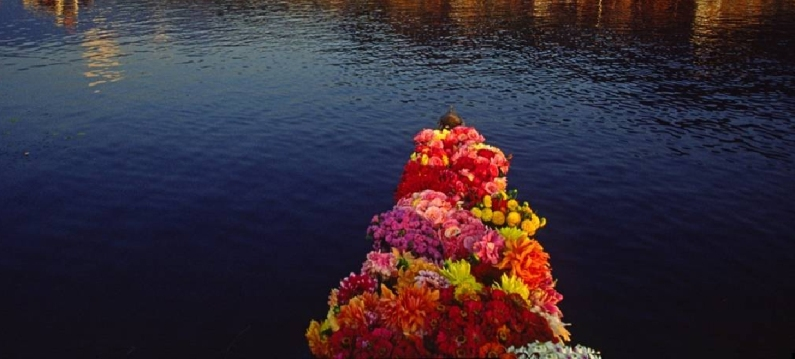

24*7 Support
+91-9906563674,9622503561
Email:travelpleasure@rediffmail.com
Houseboat Reservation
Tour Boking Form
Make Your Own Package
From Kashmir Ladakh Jammu
Tour Places OF Ladakh
Desolate moonscapes and wastelands, a bastion of the arts and a unique lifestyle.The 434 kms drive from Srinagar to Leh takes 2 days and the flight about 40 minutes. The road journeyis preferable for many reasons. The drive passes through an extraordinary range of scenery and crosses three major passes: Zoji La at 3529 meters, Namika La 3718 meters and Fatu La at 4092 meters. The landscape changes from the fertile green valleys and forest hillsides of Kashmir to the bare hillsides of Central Asia. The two days drive also allows the body to acclimatize to the change of altitude. The road climbs over Zoji La, 110 kms from Srinagar. The first is village Drass (one of the coldest inhabited places in the world in winter). The road then drops slightly to the district of Kargil at 2650 meters. Once a trading town on the ancient caravan route, it is a night halt on the road to Ladakh (lot of hotels available).The village of Shargol has a small gompa (monastery) but the town of Mulbekha is more often thought of as the Gateway to Ladakh.A little beyond Mulbekh a huge rock carving of Maitreya, the Buddha of the future, towers over the road. After crossing Namika La and Fatu La the road looks down on the incredible Lamayuru gompa perched on the opposite hillside, with a village at its base.
The first monastery was built on this site in the 10th century and a part of the central building serves as home to about 30 lamas (monks). After Lamayuru the road joins the Indus valley at Khalsi and follows the river upstream to Leh. There are numerous places of interest en route but the 11th century Alchi gompa, a few kilometers south of Saspol (70 kms west of Leh) is among the most important. The temple wall paintings and frescos are among the most beautiful and best preserved examples of Ladakhi Buddhist art. Most of the paintings in monasteries show the stages of the Buddha’s life, royal personage, figures of various Bodhistavas and tantric deities.
Leh was long an important stopover on the ancient routes between Kashgar, Tibet, Kashmir and the Indian plains. The 16th century deserted and damaged palace on the slopes of Tesemo hill rises above the town. The view south from the roof across the Indus valley and towards the Zanskar mountains is worth the climb. Leh is the most convenient place from which you can explore many interesting monasteries and gompas.
ABOUT LEH
Ladakh, a part of Jammu & Kashmir State in north of India consisting of two districts Leh and Kargil. At a distance of 434 kms from Srinagar and 474 kms from Manali, Leh is situated on the banks of the river Indus, at a height of 11,000 feet. The land of majestic mountains, Leh is a complete beauty in itself. Leh has quite a few amazing places to offer its tourists. The most striking sight of Leh is the group of women, traditionally attired, selling fruits, vegetables and household articles, spinning and knitting, and exchanging gentle banter between themselves and with passers-by. Leh airport is Ladakh's only link with the outside world for the seven months of the year. Leh is one most frequented destinations for the trekkers in India. Rumbak and Markha offer exciting treks, while Stok Kangri is the best for a climb. One can also go for boating and river running on the Indus.
DRASS
The town of Drass, 60 km west of Kargil on the road to Srinagar, is located at an altitude of 3,300 m in a relatively flat and open space in the centre of a valley.
The town of Drass, 60 km west of Kargil on the road to Srinagar, is located at an altitude of 3,300 m in a relatively flat and open space in the centre of a valley. It has extensive willow groves along the river. In winter it is covered with a thick blanket of snow. Drass experiences the lowest temperatures in the Ladakh valley and is said to be the second coldest inhabited place in Asia. The mercury may drop to as low as 40 degrees Celsius below freezing point, and communication with the outside world is often completely cut off. During the spring and summer, however, the valley around the township becomes very picturesque as the gently undulating hillsides turn into lush green pastures splashed with a variety of fragrant wild flowers.
KARGIL
The town of Drass, 60 km west of Kargil on the road to Srinagar, is located at an altitude of 3,300 m in a relatively flat and open space in the centre of a valley. It has extensive willow groves along the river. In winter it is covered with a thick blanket of snow. Drass experiences the lowest temperatures in the Ladakh valley and is said to be the second coldest inhabited place in Asia. The mercury may drop to as low as 40 degrees Celsius below freezing point, and communication with the outside world is often completely cut off. During the spring and summer, however, the valley around the township becomes very picturesque as the gently undulating hillsides turn into lush green pastures splashed with a variety of fragrant wild flowers.
ZANSKARR
As the Zanskar road winds down the steep slopes of Penzi-la to the head of the Stod valley, the majestic " Drang-Drung" glacier looms into full view. A long and winding river of ice and snow, "Drang-Drung" is perhaps the largest glacier in Ladakh, outside the Siachen formation. It is from the cliff-like snout of this extensive glacier that the Stod or Doda tributary of the Zanskar River rises. Zanskar is a tri-armed valley system situated between the Great Himalayan Range and the Zanskar mountains, the three arms radiating star-like towards the west, north and south from a wide central expanse. Here the Zanskar River comes into being by the confluence of its two Himalayan tributaries, the Stod/Doda and the Lingti-Tsarap rivers. It is mainly along the course of this valley system that the region’s approximately 14,000 strong, mainly Buddhist population, live.
COPYRIGHT (C) 2013 ALL RIGHTS RESERVED.SHERI-KASHMIR HOUSEBOATS.